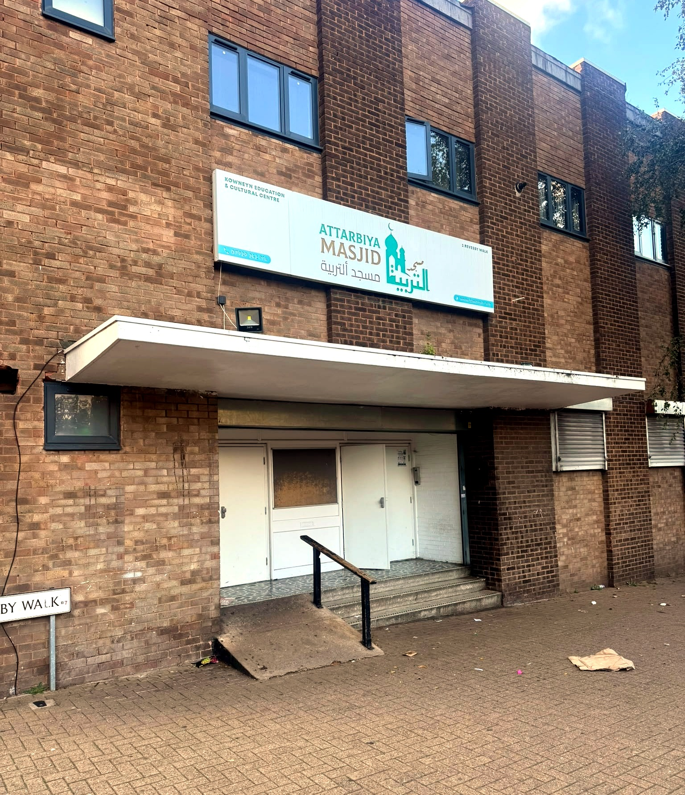

صلاة
Salah Prayer
The five daily prayers in congregation, and Jumu'ah every Friday. The times on this site come straight from the masjid's own timetable and refresh every night.
Today's times2 Revesby Walk · Nechells · Birmingham
مسجد التربية
Tarbiya is the Arabic word for raising someone well: nurturing a person in faith, knowledge and character over a lifetime. It is the name of our masjid in Nechells, and the work we try to do in it.
What happens here
صلاة
The five daily prayers in congregation, and Jumu'ah every Friday. The times on this site come straight from the masjid's own timetable and refresh every night.
Today's timesعلم
Al Furqan, the masjid's madrasah for children. For adults, evening lessons, tafsir, day classes and winter conferences, with talks recorded for YouTube.
Recorded talksجماعة
Youth nights run by Al Kissaii, the masjid's programme for teenagers, a community evening before Ramadan, and Eid prayers together on Revesby Walk.
What's been onPart of Attarbiya Masjid
The masjid's own madrasah for children aged 6 and over, six days a week, in the same building and run by the same charity. Al Furqan has its own pages, so parents can find everything in one place:
From the masjid
Loading events…
Loading talks…
Our story
20years since the charity was founded
Declaration of Trust, 3 September 2006.
Some of our history is on record. Much of it lives only in the memories of the people who were there. We are putting it together, gaps and all.
“Whoever builds a mosque for Allah, Allah will build for him a house like it in Paradise.”
The Prophet Muhammad ﷺ (Sahih Muslim)
Lighting, heating and upkeep all depend on donations. A monthly gift from £5 is a sadaqah jariyah that keeps giving.
Donate One-off or monthly, through GoCardless. Registered charity 1142204.
Visit
For this Friday's Jumu'ah time, see prayer times.